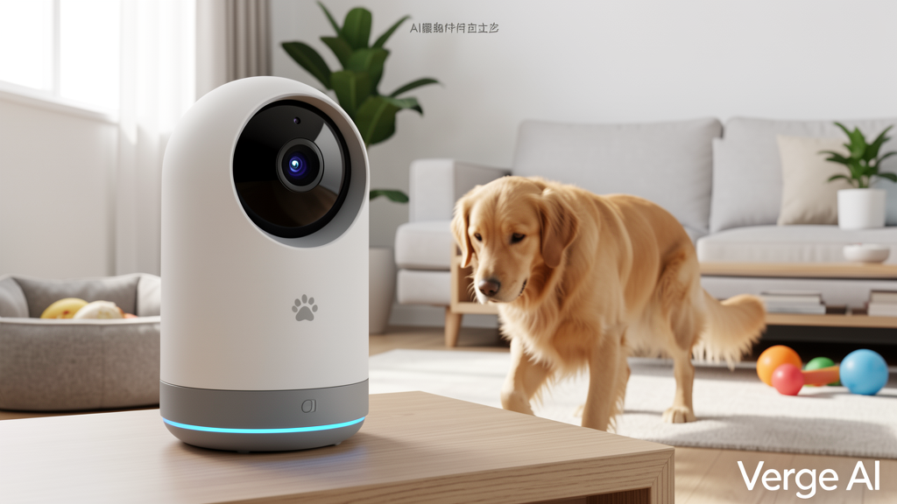
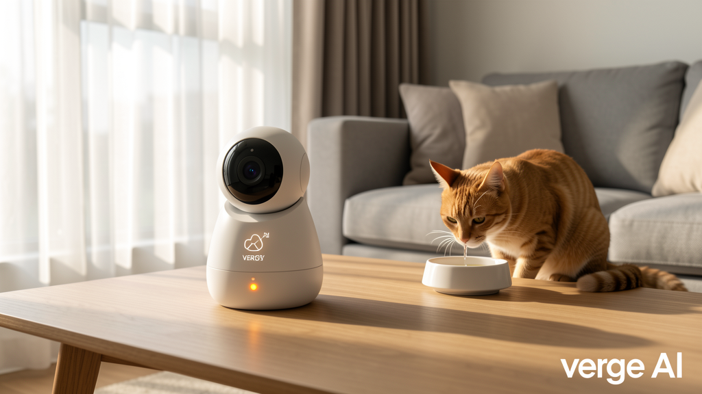
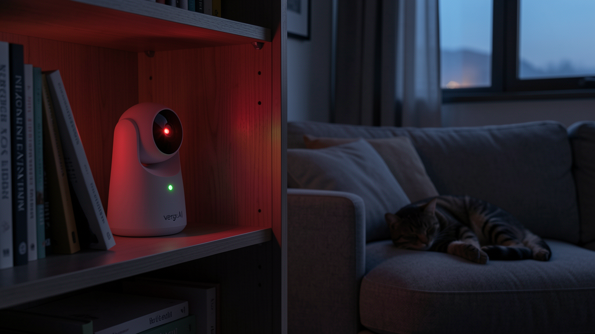

🐾 AI Pet BuddyAI 宠物伴侣AI 寵物伴侶
Pet Wellness Guardian — Edge-based animal behavior AI with 24/7 health tracking宠物健康守护者 — 基于边缘计算的动物行为AI，全天候健康追踪寵物健康守護者 — 基於邊緣計算的動物行為AI，全天候健康追蹤
Watch, Don't Record.只观察，不录制只觀察，不錄製

Mockup: Dog Tracking
Mockup: Cat Health Alert
Mockup: Night VisionCat hasn't drunk water for 12 hours? AI detects the deviation from baseline and sends a push alert: "Mochi's water intake dropped 50% below baseline — suggest checking kidney function." Three alert levels: 🟡 Mild, 🟠 Moderate, 🔴 Emergency.猫咪12小时没喝水？AI检测到偏离基线并推送警报："Mochi的饮水量低于基线50% — 建议检查肾功能。" 三级警报：🟡轻度，🟠中度，🔴紧急。貓咪12小時沒喝水？AI檢測到偏離基線並推送警報："Mochi的飲水量低於基線50% — 建議檢查腎功能。" 三級警報：🟡輕度，🟠中度，🔴緊急。
Dog starts limping — is it a real injury or just faking? CV Pose Estimation compares left-right leg symmetry. Score >20% asymmetry → "Recommend vet visit. Left hind leg bearing 30% less weight than right."狗狗开始跛行 — 是真受伤还是装的？CV姿态估计比较左右腿对称性。不对称度>20% → "建议就医。左后腿承重比右后腿少30%。"狗狗開始跛行 — 是真受傷還是裝的？CV姿態估計比較左右腿對稱性。不對稱度>20% → "建議就醫。左後腿承重比右後腿少30%。"
During lunch break, open the app and tap Play. AI remembers your pet's favorite play patterns (straight line? circles? bouncing?) and adjusts laser/treat dispenser automatically.午休时，打开App点击玩耍。AI会记住你家宠物的玩耍偏好（直线？圆圈？弹跳？）并自动调整激光/零食机。午休時，打開App點擊玩耍。AI會記住你家寵物的玩耍偏好（直線？圓圈？彈跳？）並自動調整激光/零食機。
Every Monday, an AI-generated report arrives: food intake trend, activity comparison (this week vs last), anomaly log, and vet recommendations. Peace of mind, delivered weekly.每周一，AI生成报告：食物摄入趋势、活动量对比（本周 vs 上周）、异常记录和兽医建议。每周递送安心。每週一，AI生成報告：食物攝入趨勢、活動量對比（本週 vs 上週）、異常記錄和獸醫建議。每週遞送安心。
24/7 edge vision compares behavior against each pet's unique baseline. Deviations >2 standard deviations trigger graduated alerts. Catches health issues before they become emergencies.24/7边缘视觉将行为与每只宠物的独特基线进行比较。偏差>2个标准差触发分级警报。在健康问题恶化前及时发现。24/7邊緣視覺將行為與每隻寵物的獨特基線進行比較。偏差>2個標準差觸發分級警報。在健康問題惡化前及時發現。
In multi-pet households, each animal gets its own profile. Tracks individual food intake, water consumption, and activity levels. Knows which cat ate what.多宠物家庭中，每只动物都有自己的档案。追踪个体进食量、饮水量和活动水平。知道哪只猫吃了什么。多寵物家庭中，每隻動物都有自己的檔案。追蹤個體進食量、飲水量和活動水平。知道哪隻貓吃了什麼。
All video analysis runs on-device. No footage leaves the local NPU buffer — not even encrypted. Pet Buddy watches without recording.所有视频分析在设备端运行。无视频数据离开本地NPU缓冲区 — 即使加密后也不离设备。Pet Buddy只观察，不录制。所有視頻分析在設備端運行。無視頻數據離開本地NPU緩衝區 — 即使加密後也不離設備。Pet Buddy只觀察，不錄製。
Starlight-grade CMOS sensor + IR LED array enables behavior monitoring in absolute darkness. Sleep tracking for nocturnal pets.星光级CMOS传感器 + 红外LED阵列实现全黑环境行为监测。为夜行宠物提供睡眠追踪。星光級CMOS傳感器 + 紅外LED陣列實現全黑環境行為監測。為夜行寵物提供睡眠追蹤。
| Camera摄像头攝像頭 | 4K RGB (SONY IMX678) + starlight CMOS, 2-axis PTZ (pan 360°, tilt 120°) |
| Night Vision夜视夜視 | 8× IR LED array, 940nm invisible, effective range 10m |
| AI ComputeAI算力AI算力 | RK3588 (6 TOPS NPU) for standalone OR ESP32-S3 (satellite to Home Hub) |
| Computer Vision计算机视觉計算機視覺 | OpenCV + custom animal behavior model @ NPU — gait analysis, posture, activity level |
| Multi-Pet Support多宠物支持多寵物支持 | Up to 5 pets — facial recognition + individual baselines |
| Alert Levels警报级别警報級別 | 3 tiers: 🟡 Mild (>1σ), 🟠 Moderate (>2σ), 🔴 Emergency (>3σ deviation) |
| Audio音频音頻 | Dual microphones (voice command + howl/whine detection) + speaker (treat dispenser trigger) |
| Connectivity连接連接 | WiFi 6 + BLE 5.3 + WebSocket Agent Protocol |
| Storage存储存儲 | Local microSD (32GB) — 30-day behavior log + trend data |
| Power电源電源 | 5V/2A USB-C or battery base (6h battery, auto-return to charge) |
| Dimensions尺寸尺寸 | 120×100×150mm |
| Weight重量重量 | ~450g |
Privacy is for pets too. All analysis is ephemeral — no recordings ever leave the device, not even stored.宠物也有隐私权。所有分析都是即时性的 — 不存储录像，不传输数据。寵物也有隱私權。所有分析都是即時性的 — 不存儲錄像，不傳輸數據。
No screens, no notifications. Just a gentle amber alert when your pet needs attention. Technology that fades into the background.无屏幕，无通知。当宠物需要关注时，只有柔和的琥珀色提示。技术融入背景不打扰。無屏幕，無通知。當寵物需要關注時，只有柔和的琥珀色提示。技術融入背景不打擾。
Early detection saves veterinary bills — and lives. Pet Buddy catches subtle changes humans miss.早发现省下兽医费用——和生命。Pet Buddy捕捉人类忽略的细微变化。早發現省下獸醫費用——和生命。Pet Buddy捕捉人類忽略的細微變化。
Treat dispenser + laser pointer controlled by AI or remotely via app. Play with your pet from anywhere.AI或App远程控制零食机和激光笔。随时随地与宠物互动。AI或App遠程控制零食機和激光筆。隨時隨地與寵物互動。